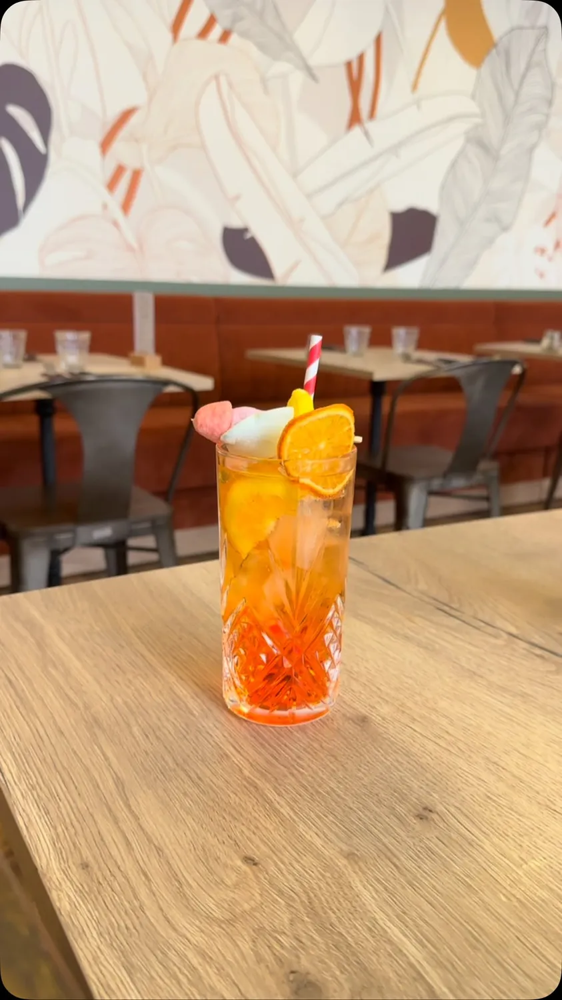
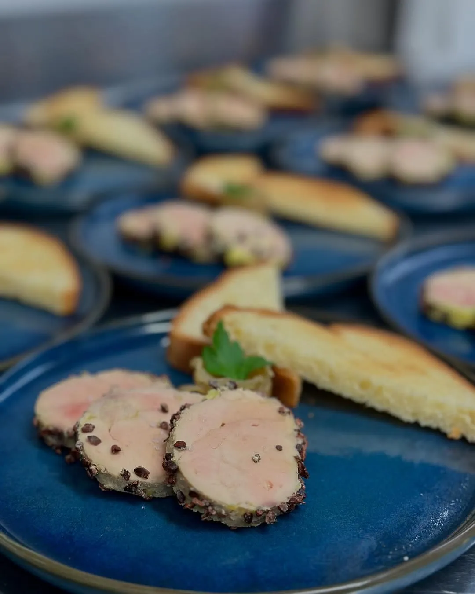

Au 118 place de la République, à Châtillon-sur-Chalaronne. Côté bar, on vous accueille dès 6 h 30 du lundi au samedi, et dès 8 h le dimanche.
Horaires
Ouvert tous les jours
Lundi, mardi, mercredi · 6 h 30 – 15 h 30Jeudi, vendredi · 6 h 30 – 19 hSamedi · 6 h 30 – 15 h 30Dimanche · 8 h – 12 hRestauration le midi, du lundi au samedi. Horaires à confirmer avec le République.
NouvellesLa salleÀ tableLe midiNouvellesSamedi : marché et huîtres

À tableNos cocktails sont de retourNouvellesLe petit-déjeuner à 8 €

À tableFoie gras au grué de cacaoNouvellesSylvain, pâtissierÀ tableLes glacesNouvellesLa Isla Band en liveÀ tableLes cocktails givrésNouvellesEt si le roi était en cuisine ?